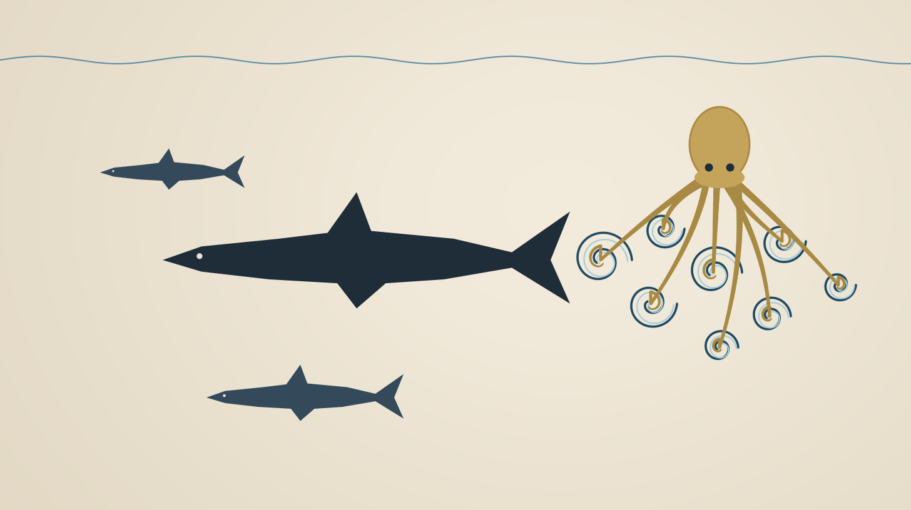
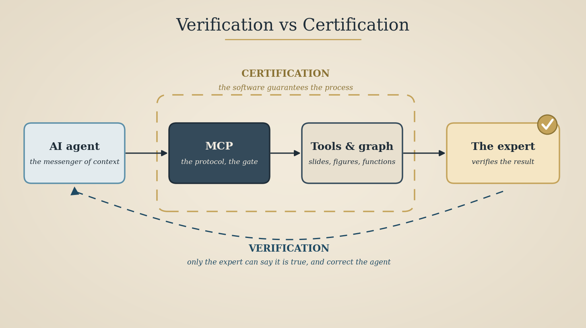

Vision, Mission and Values
Mama's Brain

Mamas Brain wants to be the company that finally connects industry experts, with academic artisans. In a period governed by bubbles; AI, energy, materials …, the life expectancy of companies keeps lowering and lowering as we talk. The market is building two possible fates as possible growth time shrinks; the apex sharks on the ocean keep growing, either eating the beta sharks or integrating them as remora fishes. But at the end of the day, these strategies depend on predators. To break this dynamic, Mamas Brain envisions three theoretical crisis which need a plausible solution and with which we are strongly committed to tackle:
- Privacy: Since the emergence of the first technological tools, knowledge stopped being contain in just the artisans mind or experience, as the tools also carried the friction, the marks, informing the others of that knowledge. Through modernity, this information drain not only affected artisans but all consumers. Now, as we approach pass post-modernity, whatever is called now, that drainage affects every technological user specially those who use it to create. At Mamas Brain, we want to secure the creative process of experts, specially offering a safe environment for those industries who work with sensitive data, industries who build on the legacy of artisans, and deserve access to the most useful tools.
- Creativity: Re-learning how to learn, re-learning how to create, rescuing the process from the automated mimicry of generative bubbles and the emptiness of the current leadership. Creativity is highly volatile, born when incompatible ideas collide and have the space and time to re-adjust, not to what the market needs but what to what is coherent and sustainable. Our responsibility is not to build and offer what the market wants or deserves today, not to over feed the consumer, rather to build a capable society, a creative one, which can fulfill their needs, the true ones.
- Autonomy: Autonomy is not the freedom to consume alone; it is neither the absence of work nor struggles. It is the capability to keep the ownership of the creative process and its outcome as private as we desire. Autonomy has grown hand by hand with that of technology, but not for everyone involved on the production process. The gap between producers and marketers is far from equilibrium, and one could claim is all a consequence of the pseudo-optimization ruling most industries, endogamy. The latter is growing with the emergence of modern AI tools, and at Mamas Brain we want to re-grow on the opposite direction, pushing exogamy, pushing for local autonomy.
It is known that we are made of our errors and contradictions, and we are not different to the rest. In practice, on the road to the autonomy, we leverage the apex sharks, not as remoras, but as octopus would do. We embrace the chaos and turbulence produced by the apex sharks and use it for our advantage. The first step on that direction, with the release of slAIdes, is inside the AI chat that helps users create their presentations. For now we use the apex sharks services, in the future we will include the beta models too and finally leverage the local modals of each individual or companies to run all of our and other collaborators services. The vision leads us to fine tune local models on customer data so the companies keep data at home, with us offering both the structure for this local models and the tools that run on the latter. But for now, let's keep the vision in rest for a bit, and get into the mission, get into the practice, get back into the workshop. Our expertise, is physics, mathematics and engineering, being the latter best expressed through softwares. Current times, specially current bubbles, which we also leverage, claim to build the last pieces of software or basically software that gets rid of the computational experts. Our mission, is built on a different ground, standing on more robust pillars, understanding that software is far from finishing, but rather meeting a new paradigm, a paradigm where the users of the latter are no longer just humans, but also agents and AI models.
Verification vs Certification

At Mamas Brain we understand the software of the future needs to integrate the usage of agents and AI natively, that means re-programming traditional software with the current necessities and capabilities. The first layer we implement, is MCP, a Model Context Protocol, that acts as intermediary between AI models and the tools we build. The agents and AI models remain the messenger of the context and the driver of the graph provided by our software, giving capabilities to the agent to invoke functions, generate complex slides and figures. It gives a certified¹ process where the AI can become native but still respect the creative process we designed, always leaving the verification² to the expert in control. This is born from the fact that software users are no longer just humans, so one can not still program with the idea of projecting the usability of the software through a GUI. Hard-coders already live in a different space to those of normal users, widely known as the Terminal or visualizers of the latter as VSCode. We export the nature of the process of coding to the architectural construction of the software itself. We do not want the agent or AI in question to waste tokens, a proxy for energy, roaming around a GUI it was not designed for. Later models such as the current ones deployed by the apex sharks no longer try GUI route to create zero-shot presentations, they already became terminal programmers, is more efficient and coherent to run a simple python script which creates a file that later the human can verify. But still, in this route, even if it is pretty creative, maybe really creative, it demands a lot from the models, first to create and then to update. SlAIdes, closes this gap, by designing the route for the agent and giving the tools along the way, so the agent just needs to call for functions, similarly to calling for help. Allowing for a cleaner³ workflow, allowing to manage our energy more efficiently, allowing for creativity to become a collaborative enterprise.
¹ Certification: The tool guarantees the process. Every step follows the rigorous structure designed and tested in advance for a specific outcome.
² Verification: The process of confirming by comparison the validity of a result, being true when it matches reality.
³ Clean: A process which is both sustainable and coherent, always in relation with the other, wasting neither the models energy nor the experts time.